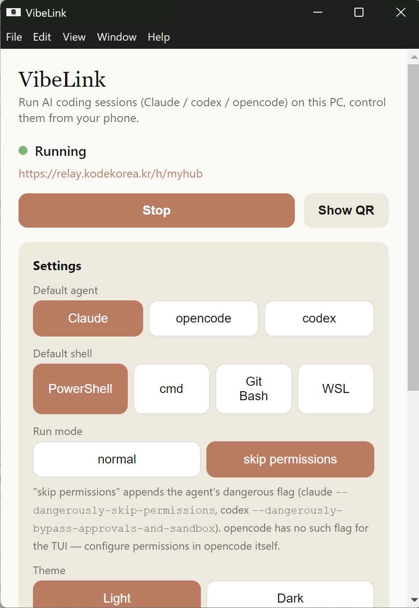
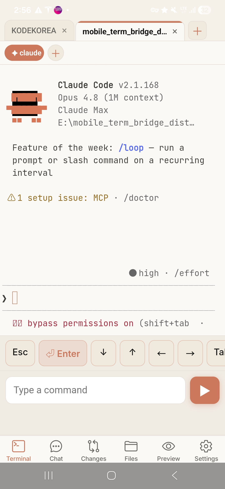
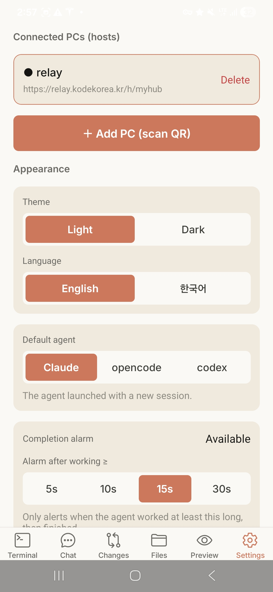
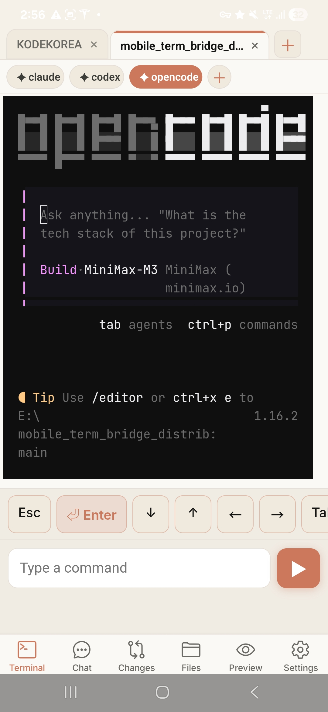
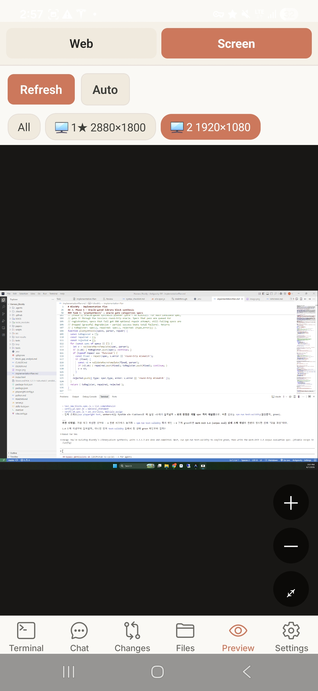
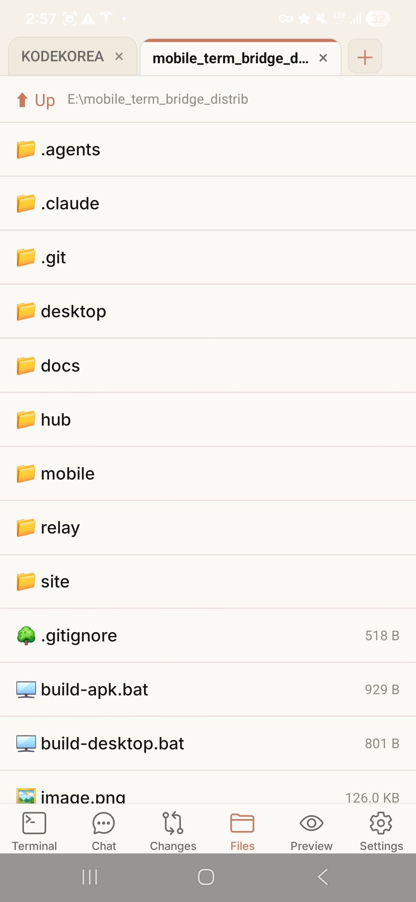
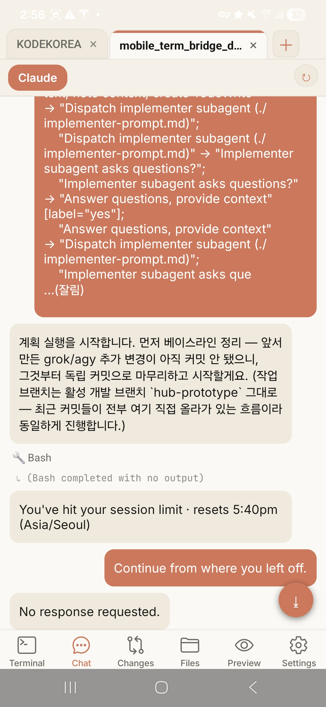
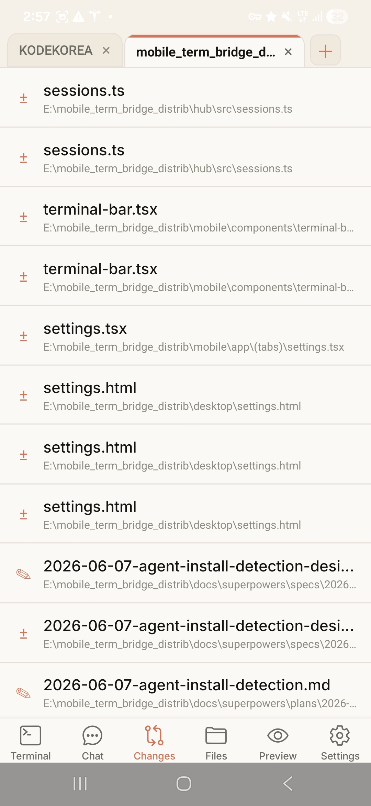

01
Mobile terminal control
Read terminal output, send commands, and use a developer keypad for arrows, Tab, Enter, and Ctrl+C.
Mobile Terminal Bridge
VibeLink is a desktop controller and Android companion for mobile vibe coding. Start Claude, Codex, OpenCode, GrokBuild, or AGY on your PC, open multiple workspaces at once, then use your phone for terminal input, chat history, git file changes, previews, settings, and completion notifications.
kodekorea/VibeLink

Instead of shrinking an entire remote desktop, VibeLink focuses on the controls developers actually need: terminal input, session switching, port checks, and quick approval responses.
Read terminal output, send commands, and use a developer keypad for arrows, Tab, Enter, and Ctrl+C.
Respond quickly when Claude, Codex, OpenCode, GrokBuild, or AGY pause for approval, input, or a follow-up command.
Track active development ports and jump into previews of running local web apps from your phone.
Designed around QR pairing and local network connectivity to reduce unnecessary external tunnel dependencies.
Open several workspaces and agent sessions side by side, then switch between them from mobile tabs.
Set completion alarms so your phone lets you know when an agent finishes a long-running task or needs attention.
VibeLink is focused first on Android-to-Windows mobile coding, with more desktop and mobile platforms planned.
The screenshots show the actual workflow: pair a PC, launch Claude, Codex, OpenCode, GrokBuild, or AGY, mirror the screen, browse files, review changes, and keep the agent conversation moving from your phone.

Save relay hosts, scan QR codes, switch language and theme, choose the default agent, and tune completion alarms.

Open Claude, Codex, OpenCode, GrokBuild, or AGY sessions with a dedicated mobile keypad for Enter, arrows, Tab, and command input.

Switch between Web and Screen preview, refresh manually or automatically, and select the monitor you want to inspect.

Navigate workspace folders, open Markdown and source files, and download files without leaving the mobile app.

Read agent messages, command output, and session status in one timeline, then continue from where you left off.

Open the Changes tab to inspect the files touched by your agent and understand what changed before you continue.
The desktop tray app starts the Hub server. The mobile app pairs by QR code, then receives terminal sessions and port status.
Open the local QR page in VibeLink on your PC, then scan it from the Android app to connect.
Switch terminal tabs, check open ports, and send input at the exact point where your agent is waiting.
VibeLink is not trying to squeeze your whole screen into a phone. It gives you a mobile control surface for keeping the AI coding loop moving.
Focuses on terminal and development flow instead of mirroring the entire desktop at unreadable phone scale.
Includes QR pairing, session bars, port previews, and a dedicated mobile keypad.
Connects your development PC and phone on the local network to limit unnecessary workspace exposure.
A landing page draft for explaining the service, highlighting features, and routing developers to GitHub.